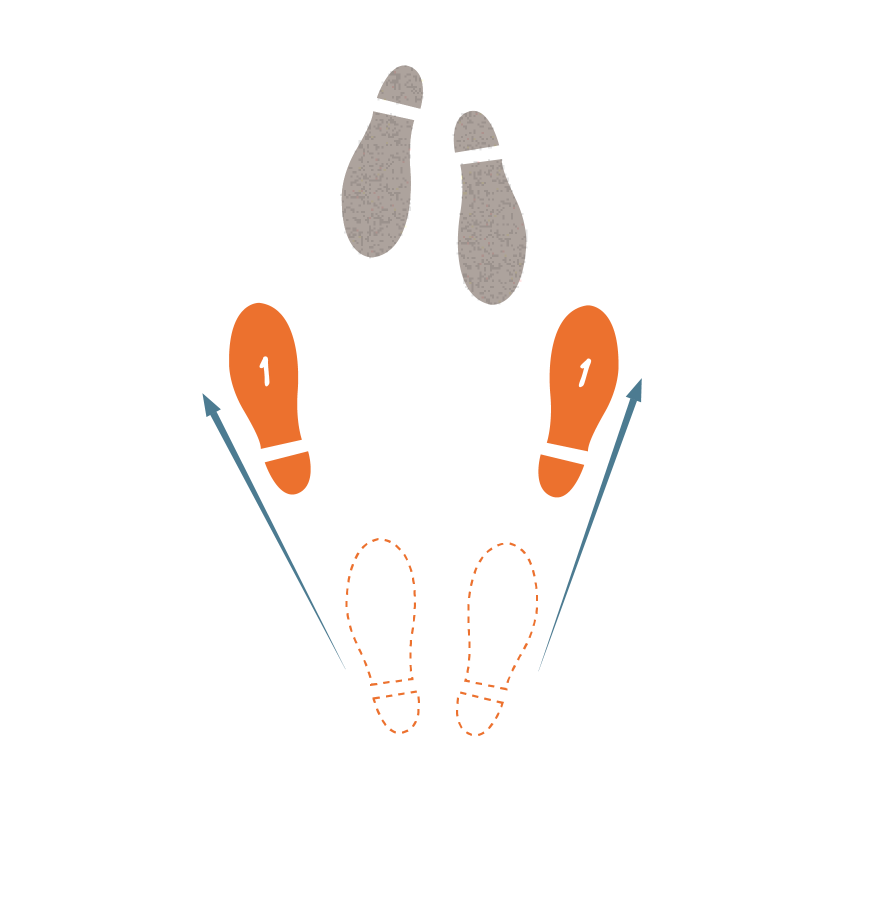
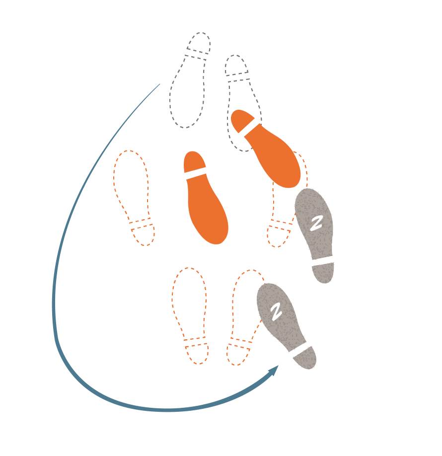
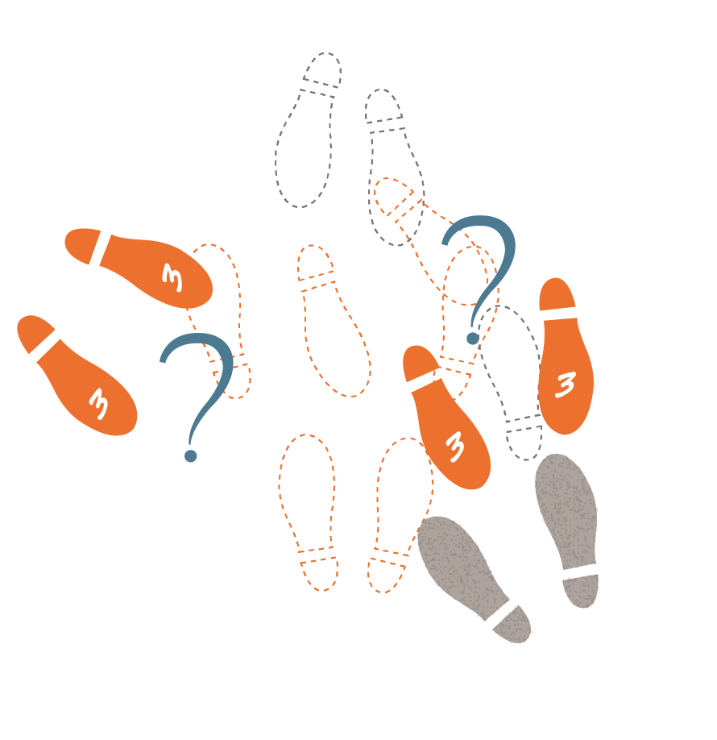
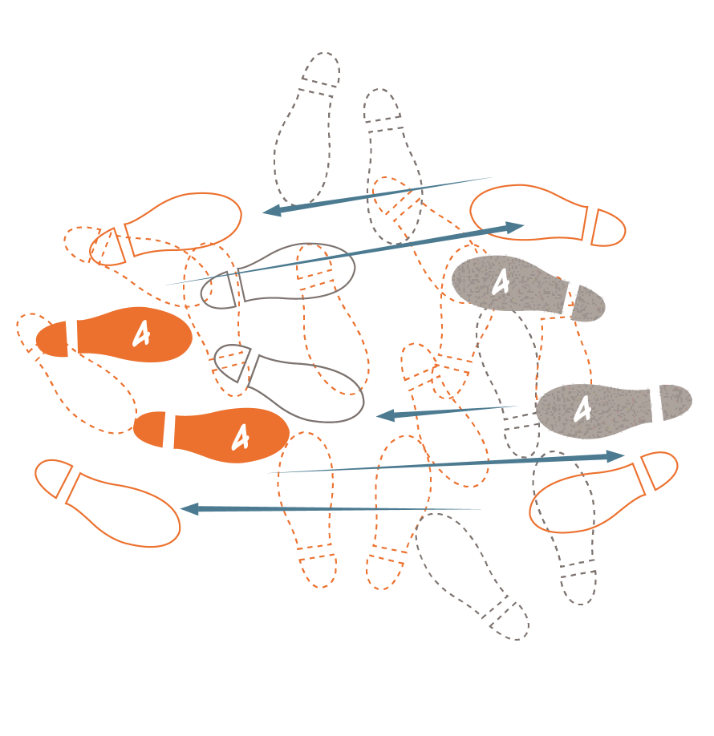
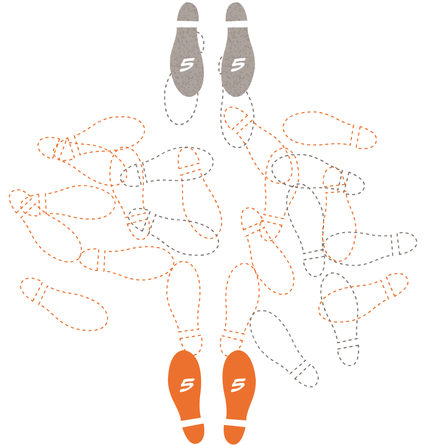

Negotiation Begins
To avoid potential patent violations, the biosimilar maker decides to negotiate with the originator. This process, often lengthy, is known as the patent dance.

Step 1
Submission to the Originator
First the biosimilar maker must submit its FDA-approved biologic application to the originator manufacturer.

Step 2
Originator Takes the Lead
The originator tells the biosimilar maker which patents they hold that might be violated by the new product.

Step 3
Biosimilar Maker has a Choice
The biosimilar maker can challenge or provide more information about the product to narrow the list of patents that can be challenged in court.

Step 4
This Step can Repeat, Back and Forth
The two companies engage in a back-and-forth process to finalize the list of patents that will not be litigated in court. While each step in this process has a time limitation, repeating steps can occur if there are disputes, delaying resolution.

Step 5
After the Steps — Dance can still go to Court
Depending on the finalized agreement, the two parties will go to court to litigate any patents that were not “settled” in the patent dance.